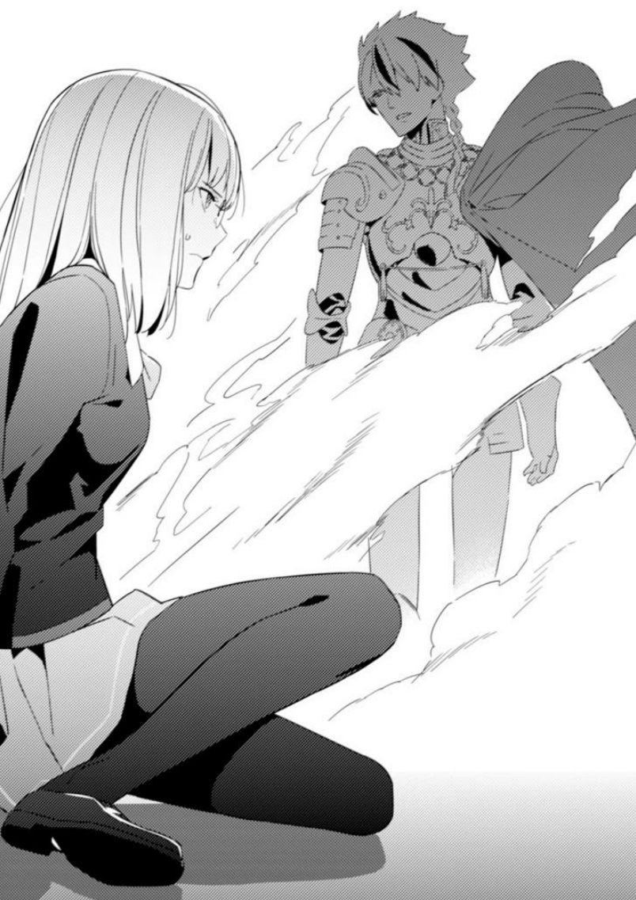
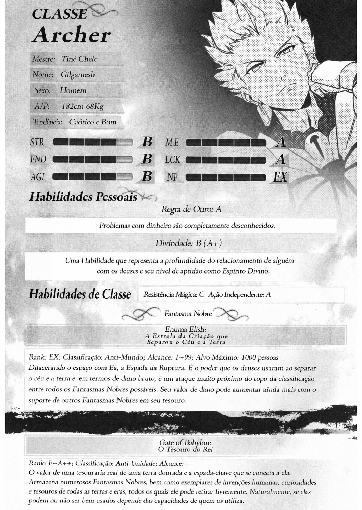
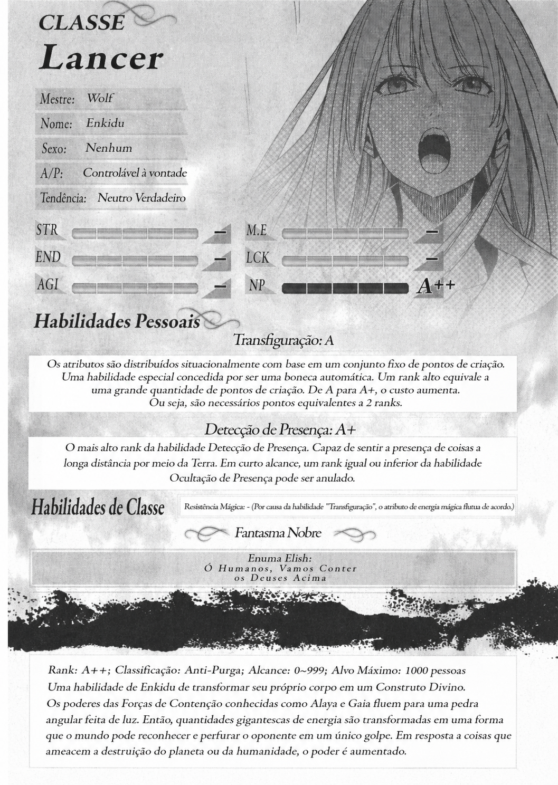

Fate/Strange Fake 1 Prólogo VII
"Visitante & ●●●●"
A mulher era uma viajante que chegara a Snowfield sem saber que a Guerra do Santo Graal havia começado meras doze horas antes. Enquanto conferia algo na tela do celular, entrou em uma drogaria e perguntou ao homem no balcão se havia por perto algum motel barato, de um só andar. O balconista, que usava um moicano que contrastava com seu jeito simpático, lhe indicou um motel. Chegou até a sugerir hotéis melhores na mesma faixa de preço, mas a mulher recusou educadamente.
O homem de moicano a olhou com estranheza até reparar nas mãos dela e na nuca. "Ei, essas tatuagens são iradas", comentou. A mulher respondeu com um sorriso cortês e saiu da loja. Então olhou para as próprias mãos. Padrões idênticos estavam gravados em ambas. Ela sabia muito bem o que eram. A mesma marca havia sido inscrita também nos dois ombros e nas costas.
A jovem parecia ter cerca de vinte anos, mas tinha um rosto tão juvenil que, mesmo para uma japonesa, provavelmente aparentava dois ou três anos a menos. Usava óculos de desenho conservador numa tentativa de parecer mais madura, mas, como se contradissesse esse esforço, havia tingido o cabelo de um loiro chamativo. Se fosse uma punk rocker, os padrões em seus braços certamente fariam parte da moda. Mas não era esse o caso. Sempre que os olhava, cerrava o semblante com irritação.
O balconista saiu pela porta atrás dela e a chamou. "Ei, moça!" "Hã?" Quando ela se virou, ele lhe lançou o celular. "Você esqueceu isso." "Ah... desculpa." Ao pegá-lo, a mulher percebeu que era o próprio aparelho. Durante aquela breve conversa, o deixara sobre o caixa e o havia esquecido ali. Segurando o telefone, curvou a cabeça. "Muito obrigada."
"Você tingiu o cabelo, mas é asiática? Chinesa... não, cambojana?" "Sou do Japão." Ao ouvir isso, o homem abriu os braços com simpatia. "Japão! Você veio de um lugar incrível! Meu primo foi pra lá uma vez. Ficou doido com aquelas máquinas de venda automática!" Dessa vez, a mulher respondeu ao jeito sociável dele com um pouco mais de sinceridade. "Que bom ouvir isso."
"Meu pai também foi ao Japão faz muito tempo. Trouxe lembranças de um parque temático chamado Kitsy Land, e a gente ainda tem tudo lá em casa. Ele disse que viu ninjas também! Tem muitos desses no Japão?" Fosse piada ou pergunta séria, o moicano animado estava prestes a continuar quando o som de hélices de helicóptero abafou a conversa. A aeronave voava numa altitude assustadoramente baixa e se afastava da cidade em direção ao deserto.
Quando o barulho enfim diminuiu, o homem estalou a língua. "Argh, esses helicópteros estão voando por aí desde de manhã. Droga, tão acabando com meu negócio! Pensei até que pudesse vender protetores de ouvido, mas nem clientes eu tô recebendo." Como muitas drogarias americanas, aquela também misturava traços de loja de conveniência e loja geral. Apesar da roupa espalhafatosa, ele era um farmacêutico treinado, capaz até de aplicar vacinas. Ainda assim, à primeira vista, qualquer um juraria que aquilo era uma simples loja de conveniência.
O resmungo fez a mulher erguer as sobrancelhas. "Desde de manhã?" "Ué, você não viu o noticiário? Parece que um oleoduto da companhia de gás lá no deserto explodiu ontem à noite. Tá perigoso, então ninguém pode se aproximar." "Isso acontece com frequência?" "Nada. Morei aqui a vida toda e nunca vi nada parecido. Nem fazia ideia de que existia algo tão perigoso enterrado sob o deserto." Enquanto o ouvia, a mulher estreitou os olhos para a figura de um helicóptero ao longe. Parecia desafiar alguma coisa. Ou, melhor dizendo, fugir dela.
Snowfield do Norte.
A quilômetros da linha de arranha-céus da cidade, havia uma instalação erguida no limite entre um desfiladeiro e uma floresta. À primeira vista poderia parecer uma fortaleza construída para proteger Snowfield, mas não era alta o suficiente para isso. Várias torres de vigia se erguiam ao redor do amplo complexo, e uma cerca de arame farpado enfatizava o rígido esquema de segurança. Tratava-se do Centro Correcional Especial Colesman, uma das muitas prisões privadas existentes nos Estados Unidos.
Prisões privadas operavam sob contrato com governos estaduais ou federal, mantendo detentos sob administração particular e gerando receita com o uso de mão de obra carcerária em indústrias e manufatura. Como prisões públicas estavam longe de bastar para abrigar uma população carcerária de mais de dois milhões, instalações desse tipo existiam por todo o país, inclusive em Snowfield. Para os moradores, isso não era nada fora do comum. Na verdade, a maioria nem sabia que havia uma prisão ali. E, claro, quem conhecia o verdadeiro funcionamento subterrâneo do lugar dificilmente poderia ser contado entre a população "normal".
No subsolo da prisão havia um "escritório" do tamanho de uma quadra de basquete. Monitores incontáveis alinhavam-se nas paredes de um aposento pouco iluminado, observados em silêncio por homens e mulheres em suas estações de trabalho. Uma sala de vigilância não é algo estranho em uma prisão, mas só parte das telas mostrava imagens do interior do edifício. A maioria exibia filmagens em tempo real de câmeras espalhadas pela cidade inteira, tanto públicas quanto escondidas. Algumas delas mostravam, sem qualquer disfarce, o interior de quartos privados de hotel.
Só por isso, já se poderia concluir que o local funcionava como posto avançado de alguma agência de inteligência. Mas havia algo definitivamente esquisito em várias daquelas "câmeras". Muitas pareciam usar o campo de visão de insetos ou ratos, movendo-se por conta própria; e, num dos ângulos aéreos, a reflexão num prédio espelhado mostrava claramente a imagem de um pássaro em voo. Ainda levaria algum tempo para a tecnologia criar robôs aviários convincentes, então aquilo não era um dispositivo mecânico, mas um familiar.
Os monitores mostravam, lado a lado, informações visuais vindas tanto de familiares quanto de câmeras comuns. Esse uso indiscriminado de magia e tecnologia era justamente uma das razões de existência do Colesman. E ali, no centro da sala de vigilância, Faldeus observava as telas ao lado dos outros funcionários, embora sua atenção estivesse fixada em uma em particular.
Enquanto os demais monitores alternavam entre vários pontos de vista, Faldeus interrompeu a rotação em uma única imagem e a contemplou. Sem expressão, afundou em pensamento. Tivera a impressão de que um novo mago havia entrado nos limites da cidade, mas... quem era aquela garota? Manipulando os controles da estação, ampliou a imagem. A câmera visava a frente de uma drogaria nos arredores do sul da cidade. Não era um familiar, e sim um equipamento óptico de ponta, capaz de resolver detalhes visuais mesmo após dezenas de ampliações.
O que havia chamado sua atenção era a marca na mão da mulher. Um padrão mágico adornava sua pele enquanto ela se virava para olhar um helicóptero que passava. ...Selos de Comando? Faldeus ponderou sobre isso, mas não chegou a uma conclusão. A assinatura de energia anômala detectada quando ela atravessara a barreira era impossível de analisar até mesmo para ele, que estudara anos na Torre do Relógio. Se era uma maga, não fazia qualquer esforço para esconder a energia mística.
Naquela parte de sua imensa oficina subterrânea sob a prisão, Faldeus mantinha subordinados vigiando a cidade vinte e quatro horas por dia. Uma grande barreira de detecção de intrusos cercava Snowfield, e incontáveis câmeras estavam sincronizadas para vigilância em massa. Tudo isso existia para rastrear os movimentos dos magos, mas magos habilidosos têm muitas formas de se esconder, e sequer era possível detectar sua entrada com certeza.
Em outras palavras, aquela mulher que não tentava ocultar a própria energia era ou uma maga de terceira categoria, ou alguém tentando provocar deliberadamente seus observadores. Faldeus se perguntou qual das duas hipóteses era a correta. No entanto, como ela não parecia sequer ter percebido a barreira, a segunda possibilidade parecia remota. Mesmo assim, ele concluiu que ainda era cedo demais para tirar qualquer conclusão.
Havia também o caso de Flat Escardos. Faldeus recordou-se de como o jovem mago havia chegado a Snowfield em um ônibus de longa distância sem se ocultar nem um pouco, antes de invocar um Servo em pleno parque público. Como discípulo de Rohngall, Faldeus conseguira evitar se envolver nas políticas internas da Torre do Relógio sem comprometer seu disfarce, mas até ele ouvira rumores sobre Flat, apelidado de "Fenômeno Acidental". Lord El-Melloi II, participante sobrevivente da Quarta Guerra do Santo Graal, lecionava Estudos Mágicos Modernos, disciplina antes ridicularizada como inútil. Ainda assim, em poucos anos produzira inúmeros excelentes magos, ganhando o apelido de "Conselheiro Gênio". E o discípulo que mais tempo estivera sob seus cuidados era ninguém menos que Flat Escardos.
Faldeus imaginara que a chance de participação de El-Melloi II fosse alta por sua experiência anterior, mas não esperava que um aluno dele aparecesse ali por conta própria, nem que Flat repetisse ações completamente sem sentido do ponto de vista de um mago. Ainda assim, era apenas mais um item na crescente lista de eventos fora de seus cálculos, assim como o singular Espírito Heroico Lancer, ou qualquer que fosse a trama misteriosa do casal Kuruoka.
Faldeus não perdera a compostura, mas não conseguia disfarçar a frustração diante do tamanho da confusão, enquanto observava a mulher da frente da drogaria, com marcas semelhantes a Selos de Comando na mão. Uma de suas funcionárias, que também acompanhava o monitor, perguntou: "Devemos avisar o chefe de polícia?" Ele balançou a cabeça. "Fiquem de prontidão. Por enquanto, vamos continuar reunindo informações sobre Flat e o lobo prateado." "Sim, senhor." "Temos uma aliança, mas este detalhe não é algo para vazar ao outro lado."
A rede de informações pessoal de Faldeus era bem diferente do sistema de vigilância empregado pela polícia sobre a cidade. Além disso, seu conhecimento individual ultrapassava o do próprio chefe de polícia. O herói primordial Gilgamesh e Tiné Chelc, sucessora dos guardiões nativos da terra; o enigmático Espírito Heroico supostamente dotado de poderes de transformação e o excêntrico da Torre do Relógio Flat Escardos; o casal Kuruoka, cujas atividades permaneciam desconhecidas, embora se soubesse que continuavam em casa; o lobo prateado criado como reagente mágico e o Espírito Heroico que se supunha ser Enkidu. E, além deles, havia ainda Jester Karture, um forte candidato a Mestre, cuja oficina parecia ter sido atacada. Inúmeros cadáveres queimados e um corpo ressecado haviam sido encontrados ali. Talvez um Servo tivesse entrado em fúria, ou talvez o próprio Mestre tivesse matado seus discípulos por algum motivo. Os homens de Faldeus ainda perseguiam pistas.
"Afinal, o Espírito Heroico que os Kuruoka invocaram continua me interessando." Eles deveriam ser inimigos quando a guerra começasse. Esse era o acordo, mas era estranho que ainda não tivessem feito nenhum movimento. Uma chamada mágica fora feita aos Kuruoka apenas para verificação. Quando uma voz sem vida respondera "Desculpe. Temos assuntos importantes demais, então não temos tempo para a Guerra do Santo Graal", Faldeus concluíra que alguma anomalia devia ter ocorrido. Não deveria existir nada mais importante para o casal Kuruoka do que aquela guerra. Aquilo era estranho demais até para um blefe.
Havia a possibilidade de estarem sob hipnose poderosa ou controle de terceiros. Mas os Kuruoka não eram magos inexperientes. Se estavam sendo manipulados, era provável que fosse obra de um mago de altíssimo nível. Faldeus não podia ignorar a hipótese de a Associação dos Magos ter enviado um agente de elite. Nesse caso, as ações de Escardos poderiam até ser uma espécie de finta bizarra. Bem... mesmo para uma finta, seria esquisito demais. Talvez o pessoal da Inteligência resolvesse isso depois.
Ainda restavam outros problemas. Os familiares que Faldeus e seus subordinados haviam enviado ao deserto haviam perdido o contato no dia anterior. Outros magos também tinham despachado incontáveis familiares para a área, mas a maioria fora aniquilada no choque entre os dois Servos. Faldeus sabia disso, mas algo destoava. Vários familiares, inclusive alguns seus, haviam sido encontrados inconscientes. E os que estavam desacordados apresentavam feridas estranhas na pele. Quando suspeitaram de maldição ou doença, enviaram-nos ao laboratório para análise.
"Que coisa... vai ser difícil encerrar isso de forma elegante com tantas irregularidades", suspirou Faldeus, rapidamente recompondo a expressão. "Srta. Aldora, atribua vigilância de Nível 2 à mulher da câmera B-357." "Sim, senhor." Depois de dar a ordem, levantou-se lentamente da cadeira. Ao sair da sala, voltou os olhos para os monitores que mostravam o interior da prisão. Homens e mulheres apareciam, um a um, em aposentos aparentemente separados. "Em breve, chegará a hora de vocês se moverem também."
Concluindo sua inspeção dos indivíduos de aparência sinistra, Faldeus murmurou para si mesmo enquanto deixava a oficina: "Sinceramente, esses sete dias parecem tão divertidos que dá vontade de vomitar." Ao sair, uma das telas mostrava a imagem captada de um helicóptero. Era a prova do choque entre dois Espíritos Heroicos: gravada na terra e transformada em vidro pelo calor e pela pressão extremos, erguia-se uma cratera gigantesca de vários quilômetros de diâmetro.
Las Vegas, Nevada.
No topo de certo cassino havia uma capela estranha. Igrejas eram abundantes em Las Vegas, mas aquela era especialmente discreta, sem vitrais nem qualquer símbolo típico da Igreja. As pessoas a tomavam por mera decoração do tema do cassino. Era o tipo de lugar ao qual apostadores apareciam para pedir perdão quando a sorte fugia ou agradecer quando ganhavam.
Num salão modesto acima da entrada da capela, um velho padre de aspecto cansado começou a falar, como se conversasse sozinho. "Imagino que não seja necessário um resumo do contexto, hm. Bem, como posso colocar... o único clero em Snowfield agora é inexperiente. Não espero que consigam resolver algo como uma Guerra do Santo Graal."
Além de seu verniz de organização religiosa, a Igreja Sagrada é a maior instituição do mundo. Sediada na Europa Ocidental, ela sustenta uma estrutura que se espalha pelo globo inteiro. Sua missão é governar todos os milagres e magias do mundo, o que a coloca em oposição direta à Associação dos Magos, que oculta esses milagres do público. No entanto, essa relação muda um pouco quando se trata da Guerra do Santo Graal.
Se um Graal é o artigo genuíno, então ele é um tesouro da humanidade a ser administrado pela Igreja. A Igreja também tem o dever de impedir que esse ritual milagroso seja abusado a ponto de amaldiçoar a população em geral. No início, ela apenas vigiou o conflito em silêncio, mas depois do massacre indiscriminado que maculou a Segunda Guerra do Santo Graal, passou a participar oficialmente como administradora.
Se as marés anômalas de energia mágica observadas na noite anterior eram produto de Espíritos Heroicos, então o caso caía sob a jurisdição da Igreja. O Grande Incêndio de Fuyuki, a destruição de um hotel arranha-céu, a invocação de um monstro marinho e a perda de caças militares haviam ocorrido todos durante a Quarta Guerra do Santo Graal. A missão da Igreja tornava-se ainda mais importante agora que havia potencial para desastres ainda maiores. Se o pico recente de energia tivesse ocorrido nos arredores da cidade, Snowfield teria sido apagada da face da Terra.
No momento, a existência da cratera no deserto estava sendo abafada. Alguém estava exercendo poder mágico e político para impedir qualquer vazamento, seja por imagens de satélite, seja pela imprensa. Durante as Guerras do Santo Graal anteriores em Fuyuki, a Igreja havia se movido para encobrir aqueles "acidentes" visíveis como parte de sua missão de administrar o artefato sagrado. Desta vez, porém, a Igreja Sagrada não estava envolvida no incidente no deserto. Isso era motivo de grave preocupação para a Assembleia do Oitavo Sacramento.
Ficara determinado que o encobrimento atualmente em andamento no deserto não estava sendo conduzido nem pela Igreja Sagrada nem pela Associação dos Magos, mas por um terceiro grupo com poder para controlar forças policiais e agências nacionais de inteligência. A Igreja não tinha todos os detalhes, mas, no mínimo, estava claro que o governo federal dos Estados Unidos estava envolvido.
Normalmente, alguém poderia imaginar que os oficiais da Igreja deveriam agradecer a esses estranhos por terem tirado de suas mãos o mais problemático dos trabalhos... só que isso também carregava a mensagem implícita de "o poder de vocês é desnecessário para esta Guerra do Santo Graal". Em outras palavras: estavam mandando a Igreja simplesmente ir embora. Havia quem achasse isso imperdoável. Eram aqueles que presumiam vigiar o povo de Snowfield. Outras vozes, de natureza diferente, defendiam entrar à força na Guerra do Santo Graal de Snowfield.
Assim, a ordem descera aos padres em melhor posição para chegar a Snowfield, e qualificados para administrar a guerra, para se dirigirem à cidade com urgência. "Sim, hm, como devo colocar... são ordens diretas do quartel-general da Assembleia do Oitavo Sacramento. Não gosto de mandar você sair da cidade, mas não há mais ninguém tão perto do local, hm." O padre parecia tímido enquanto continuava falando. "Se você não for, então a opção seguinte sou eu, mas, veja, ação é mais a sua praia, certo? Hm. Acho que alguém com vigor combina melhor com a tarefa desta vez. Bem, se estivéssemos em uma situação em que a Igreja tivesse mais influência, poderíamos forçar o governo a fazer o que queremos, mas não somos tão fortes aqui."
Era verdade que a Igreja Sagrada tinha poder para mover nações. Ainda assim, isso só se aplicava a países em que sua influência era forte. Nos Estados Unidos, essa influência variava de estado para estado. Havia casos em que a Igreja podia aplicar pressão considerável, dependendo do presidente em exercício e da opinião pública. Nos estados em que sua influência era fraca, porém, manipular os acontecimentos podia se revelar muito difícil. Mesmo em Fuyuki, Japão, foi somente graças a décadas de preparação para as Guerras do Santo Graal que foi possível abafar tantos desastres. Encobrir incidentes como a perda dos caças exigira capital político vindo de todas as direções possíveis.
"Bem, em resumo, provavelmente escolheram uma área em que nossa influência é fraca justamente para colocar os planos em movimento. O Evangelho tem avançado devagar em Snowfield em especial por causa da oposição barulhenta da tribo nativa encarregada da região." Mantendo os olhos na Bíblia em sua mão, o velho padre se virou para uma parte da capela. "Erm... uh... está me ouvindo? Hanza?"
Outro padre, sentado no fim de um dos bancos, respondeu sem desviar os olhos do celular. "Relaxe, Father. Não ouvi uma única palavra." "Você não devia ignorar as pessoas, hm." "Perdão, assuntos de governo não me dizem respeito. Tudo que o senhor precisa me transmitir é a vontade do Senhor. Uma única frase basta. Algo como: 'Aniquile o inimigo.'" O segundo padre apertava os botões do celular numa velocidade anormal. Parecia estar redigindo algum documento.
"Não, não. Seu trabalho desta vez é ser administrador, não Executor. Bem, dependendo de como as coisas evoluírem, suas outras habilidades talvez também sejam necessárias." O sacerdote mais velho suspirou. "Ei, hmm, Hanza, talvez você devesse largar o telefone quando as pessoas estiverem falando com você, sim?" "E o senhor, Father, devia olhar para as pessoas quando fala com elas."
Com isso, o homem chamado Hanza finalmente levantou os olhos do celular e encarou o padre que lia as escrituras. O velho suspirou ainda mais profundamente e retribuiu o olhar. "Além disso, na frente das outras pessoas você deveria falar e agir mais como um sacerdote, sim?" "Entendo, Father. Vou me trocar de roupa e ir de civil ao cassino da outra cidade." "Hm. Eu preferiria que você não fosse a cassinos em primeiro lugar, sim?" Hanza levantou as mãos e se ergueu lentamente, ignorando o comentário.
Ele parecia estar na casa dos trinta e poucos anos, e causava forte impressão com o tapa-olho vistoso cobrindo o olho direito. Era um homem de ascendência espanhola, com um brilho destemido no olhar que lhe dava ares de ator de cinema apaixonado. "Pois bem, vamos partir, Quartet. Faz tempo que não temos trabalho." Quatro jovens freiras surgiram das sombras e se alinharam em silêncio atrás dele.
O velho padre os observou ir quando algo disparou sem ruído algum a partir de sua mão direita. Por meio de alguma técnica especial, uma placa metálica deixou a mão do sacerdote com velocidade de bala. Até algumas décadas antes, aquela ficha azul fora usada como ficha de alto valor no cassino abaixo da igreja.
No instante seguinte, o braço de Hanza se torceu num ângulo impossível, agarrou a moeda e devolveu o arremesso com a mesma velocidade. Quando o velho padre a apanhou sem esforço, a moeda se esfarelou em sua mão. Ao olhar para ela, viu que o metal havia se dividido em dezesseis partes iguais, como uma pizza.
"Ah, perdão. Pensei que suas habilidades estivessem enferrujando de tanto ficar colado no telefone. Hm." Hanza girou lentamente para encarar o velho, que apenas deu de ombros. Então, com um sorriso inocente no rosto, murmurou em tom sarcástico: "O senhor também precisa de um pouco mais de ação, Father."
Algum lugar em Londres. Torre do Relógio.
A Torre do Relógio estava mergulhada no mesmo frenesi que seus rivais da Igreja Sagrada. Havia, é claro, diferença de fuso horário entre Londres e Snowfield. No momento em que os alunos da Torre talvez estivessem começando suas aulas matinais, os primeiros disparos da Guerra do Santo Graal já ecoavam no deserto de Snowfield.
Os magos da Torre detectaram as energias emitidas pelo confronto, ou ouviram relatos de outros magos próximos à área. Antes do meio-dia, a conversa sobre a guerra já se espalhara por todo o prédio. Entre os magos inquietos, dois homens caminhavam apressados em direção à sala de aula de Estudos Mágicos Modernos.
"Ainda não consigo acreditar que Faldeus era um espião..." "Mas é a verdade. Já descartaram a possibilidade de ele ser um agente duplo." Na frente do jovem mago caminhava uma figura humanoide enorme e sinistra, não muito diferente de um espantalho. O corpo era envolto em bandagens e estopa, oculto ainda mais por um casaco com capuz. A grande figura não era humana, mas sim um boneco improvisado controlado por Rohngall, cujo corpo de marionete anterior havia sido transformado em queijo suíço alguns dias antes.
"Mas, Mestre, o senhor não pode fazer alguma coisa com esse boneco? Todo mundo está encarando." "Isso também me envergonha, usar uma boneca tão improvisada e indecorosa! É bem possível que Faldeus tenha sabotado as outras..." A construção era grosseira, mas os sensores aparentemente funcionavam bem. O boneco fixou o foco no aluno ao lado e perguntou: "Está nervoso?" "Sim. Afinal, é a primeira vez que vou conhecer um Lord."
Lord. Título dado aos chefes dos doze departamentos da Torre do Relógio. A ansiedade do rapaz diante de alguém de tal estatura era evidente em seu rosto quando fez outra pergunta. "Que tipo de pessoa ele é? Hum... Lord El-Melloi II?"
"...Dez anos atrás, nem eu pensava que ele fosse alguém especial. Presumia-se que não passava de um simples fantoche que a família El-Melloi, por conveniência, havia empurrado para a ingrata função de chefiar aquele amontoado de disciplinas conhecido como Estudos Mágicos Modernos. Mas não demoramos a descobrir como estávamos terrivelmente errados." Rohngall continuou avançando em passo rápido, tecendo sua explicação com calma.
"Verner Sisimund, herdeiro da Magia das Borboletas. Roland Perjinski. Org Lam. As irmãs Radia Pentel e Nazica Pentel. Fezgram Vol Senbern. O que você acha que esses nomes têm em comum?" "Todos são magos promovidos aos postos de Brand e Pride nos últimos anos, não são? O surgimento de tantos jovens magos causou uma enorme comoção. Nós também ficamos animados com isso."
Os magos da Associação recebem títulos condizentes com sua posição, e títulos abaixo de Grand, como Brand e Pride, só são concedidos a magos de calibre muito superior ao de seus colegas mundanos. Rohngall não corrigiu o discípulo. Apenas acrescentou: "Eles compartilham ainda outra característica." "Eh?" O aluno inclinou a cabeça, confuso. "Todos foram discípulos do Professor El-Melloi."
"!" "El-Melloi II em si é apenas um mago de baixo escalão. Contudo, seu verdadeiro valor está em outro lugar. Sua visão é extraordinariamente ampla para um mago, e ele tem a capacidade de captar e trazer à tona o talento mais profundo de cada pessoa. Pode muito bem ser o maior instrutor da Torre do Relógio, e isso sem esmagar os pupilos como Zelretch faz."
O estudante ficou sem fala, incrédulo. Rohngall continuou: "Isso vale também para seus alunos atuais. Todos os seus formados, sem exceção, atingiram o posto de Pride ou superior em até uma década." "Sem exceção...?" "Há quem diga que muitos deles em breve poderão alcançar o título de Grand, algo que foi raro ao longo de toda a história da Torre do Relógio. Talvez seja uma bênção o fato de ele não aceitar muitos alunos, mas, se um dia chamasse de volta seus antigos discípulos, isso poderia abalar a própria história da Torre."
"Incrível..." O rapaz já ouvira que El-Melloi era um instrutor popular, cheio de apelidos, mas era a primeira vez que escutava a razão de tamanha avaliação. Tomado de respeito e admiração, perguntou: "Qual é a posição dele dentro da Torre do Relógio?"
"Se Lord Belfaban representa a velha guarda teimosa, então eu colocaria El-Melloi II no campo flexível dos reformistas. Bem, ele é o tipo de homem que respeita mérito, independentemente de tradição ou novidade. Em vez de chamá-lo de conservador ou reformista, talvez o mais correto fosse dizer que é uma parte neutra." O aluno ficou em silêncio.
Antes de entrarem, Rohngall lhe deu um último conselho: "Não presuma que será capaz de compreendê-lo num simples olhar. Quem vai acabar dissecado é você."
Quando a porta da sala se abriu, Lord El-Melloi II se preparava para iniciar sua aula da tarde. "Sr. Rohngall, em que posso ajudar?" Apesar da posição que ocupava, o Lord de fala mansa não parecia projetar uma aura especialmente inacessível.
"É bastante ousado da sua parte manter aulas normais nessas circunstâncias, Lord." "Pensei em suspender as aulas, mas há apenas um certo tanto que posso fazer sobre a situação desta vez. Assim, julguei melhor devolver à atmosfera da Torre do Relógio, agora tão agitada, sua calma habitual."
"Que humildade. Considerando que se trata de uma Guerra do Santo Graal, imagino que o senhor, acima de todos, possa prever melhor seu curso." O discípulo de Rohngall inclinou a cabeça, sem entender a que o mestre se referia. El-Melloi II permaneceu em silêncio por um momento e então soltou um suspiro discreto. "Se eu tivesse a habilidade de adivinhar um desfecho apenas pelos meus sentimentos, isso seria ideal... mas minha inexperiência me deixa sem alternativa senão observar a situação com cautela."
Rohngall não se deixou deter pela autodepreciação do Lord. "É justamente esse conselho prudente que venho buscar. O que o senhor acredita serem os objetivos dos responsáveis por esta guerra?" "Mesmo que, neste estágio, tudo o que eu possa oferecer sejam especulações ainda mal cozidas?" "Por favor."
El-Melloi II franziu o cenho em profundo pensamento por vários segundos antes de responder. "Do meu ponto de vista, há três ou quatro grupos envolvidos, cada um com objetivos diferentes. No mínimo, um grupo empenhado em suprimir informações e outro interessado em expô-las já deixaram sua presença evidente... embora pareça certo que esses dois poderes estejam cooperando apesar das intenções divergentes."
"De fato, há muitos mistérios em suas ações..." "Creio que podemos supor que, para todas as organizações envolvidas, o objetivo não seja a manifestação do Santo Graal. Talvez busquem estabilizar e produzir em massa o sistema da Guerra do Santo Graal, em vez do próprio Graal. As coisas que fizeram para nos provocar e o chamamento de tantos magos à cidade podem ser parte de um plano para analisar a Guerra do Santo Graal."
Rohngall balançou a cabeça diante da hipótese. "Inacreditável... que um forasteiro tentasse analisar um milagre como a Terceira Magia é algo simplesmente... Além disso, o senhor sugere que fariam uma farsa dessas mesmo já tendo autoridade sobre o sistema?" "O senhor tem razão em dizer que magos cujo objetivo é alcançar a Raiz nunca sequer cogitariam algo assim. No entanto, o fato é que este conflito envolve muitos poderes e muitas ideologias. Entre eles..."
El-Melloi II interrompeu a frase por um instante para respirar fundo e então continuou. "Isto não passa de um palpite, uma previsão baseada em um pressentimento, mas... há mais uma coisa." "Mais uma?" "Talvez o senhor ache difícil de entender, e possivelmente imperdoável..." Apesar do semblante fortemente franzido, falou com calma. "Há aqueles que desejariam degradar a Guerra do Santo Graal a um jogo, ou a um espetáculo."
"Isso é... impensável. Com que propósito?" "Não compreendo seus motivos. Mas não é motivo de riso." El-Melloi II fechou os olhos e recordou a Guerra do Santo Graal que conhecia. "Entre os Mestres e Espíritos Heroicos que lutaram no passado, havia aqueles que tratavam a própria Guerra do Santo Graal como diversão. Ao menos, porém, eram sinceros nesse envolvimento. Apostavam a própria vida e agarravam o instante. Mas desta vez, sinto que existem pessoas que observam a Guerra do Santo Graal de uma posição dominante e pretendem transformar o ritual em uma desgraça. Isso nada mais é do que um insulto dirigido a eles. O que significa que eu preciso..."
El-Melloi II interrompeu-se de repente ao perceber que seus punhos estavam cerrados. Estalou a língua diante do próprio descontrole emocional e baixou os olhos. "...Perdoe-me. Deixei a emoção transparecer um pouco." "De modo algum, Lord. Foi extremamente esclarecedor." "Daqui em diante, assim que mais peças se reunirem, o quadro completo deverá ficar visível. Se eu tomar alguma atitude, será depois disso."
Então murmurou mais um comentário autodepreciativo: "...isso se eu puder garantir que serei de alguma utilidade quando eles finalmente se moverem." Depois de colher mais algumas teorias de El-Melloi II, Rohngall se despediu e comentou com admiração: "Estou impressionado, Lord, por ter enviado um de seus próprios alunos ao local tão rapidamente."
"Meu aluno?" Algo estava profundamente fora do lugar.
"Sim. O pessoal que enviamos a Snowfield ontem relatou ter visto um de seus alunos por lá..." "...O que quer dizer com isso? Não me lembro de ter enviado nin..." Assim que El-Melloi II pensou um pouco, a verdade o atingiu. Naquele dia, um aluno faltara à aula. E, durante os últimos dias, em que as aulas estiveram suspensas, ele também não aparecera nenhuma vez. "Não..."
El-Melloi tirou o celular do bolso e discou um número. "O número discado não foi reconhecido. Verifique e tente novamente." Ao ouvir a mensagem, sentiu o vazio em seu estômago se aprofundar ainda mais. Ligou para outro número. "...Sou eu. Preciso que verifique uma coisa agora mesmo. Registro de entrada e saída de um aluno. Veja se Flat Escardos deixou o país."
Do outro lado da linha parecia haver alguém encarregado da administração estudantil. Cerca de trinta segundos depois, a resposta veio: "O Sr. Escardos embarcou para a América três dias atrás. O motivo declarado da viagem foi... turismo. Ele deixou um bilhete: 'Obrigado, Professor! Vida longa ao London Star!' O que isso pode significar, eu me pergunto?" "Já basta. Obrigado", respondeu apressado, encerrando a ligação.
Então... inúmeras lembranças de Flat passaram a correr desenfreadas pela mente de El-Melloi II. Das pequenas travessuras, como entrar no quarto de alguém e registrar o ID de usuário de um jogo novo como "London☆Star", a contaminar com conhecimentos de um filme estranho o honorável Código Místico da empregada de mercúrio de sua irmã, até se esgueirar para dentro de um navio-cassino pertencente a um rei vampiro e provocar um motim... memórias do incessante histórico de confusões de Flat se repetiram em sua cabeça.
Torcendo as bochechas em agonia, El-Melloi II amaldiçoou o mundo inteiro. "Foda-se..." "Eh?" O aluno de Rohngall o ouvira dizer algo, mas não conseguira entender. Tinha certeza de ter ouvido palavras, porém rejeitou a ideia de que uma gíria tão chula pudesse ter saído da boca daquela figura ilustre com quem vinham mantendo uma conversa tão racional. "Erm, aconteceu alguma..."
Mas era tarde demais. O sangue subiu à cabeça de El-Melloi e ele desabou em cima da plataforma de aula. "Lord!? Lord!?" O jovem mago ficou abalado diante da cena. Mas, do lado da sala, uma das alunas se pronunciou. Era uma jovem de talvez vinte anos. "O mestre sempre fica assim quando o assunto é o Sr. Escardos." "Hã? Ah, entendo..." "Vou levá-lo até a enfermaria. Com licença."
Com isso, a mulher fez uma reverência polida a Rohngall e ao discípulo antes de erguer seu Lord e mentor por cima do ombro. Os dois observaram a cena bizarra indo embora sem saber como reagir. Rohngall comentou com seu aluno: "Como posso dizer... ele é sem precedentes em vários sentidos... e parece absurdamente ocupado." "Sim... o senhor tem razão. Vamos deixar por isso mesmo." Um pesado suspiro escapou da boca do boneco de Rohngall, seguido de uma observação tingida de pena. "Não haveria humor nenhum em ver um Lord da Torre do Relógio morrer de excesso de trabalho."
Estados Unidos. Snowfield. Delegacia.
"E aí, cachorro! Bom dia, mano!" No escritório do chefe de polícia, Orlando respondeu à chamada estridente com expressão sombria. "Já passou do meio da tarde. Volte ao trabalho." "Ei, ei, tá querendo trabalhar teu Servo até a morte? Enfim, escuta. Eu pedi pra você me arranjar umas mulheres, né? Aproveita e manda uma das iguarias deste país junto. Só pra deixar claro, eu não vou pagar nada. Quem banca é você."
"......Por favor, me diga que não foi só por isso que ligou." "Qual o problema?!" Aquilo talvez fosse blefe para esconder o constrangimento de Caster, ou algum tipo de teste. Decidindo agir com sinceridade, Orlando tentou outro caminho. "Sinto muito por ter desligado na sua cara ontem à noite. Você já deve ter ouvido as notícias... o que acha do incidente no deserto?"
Mulheres e afins deviam ser só papo furado. Como Servo, Caster provavelmente queria discutir a batalha ocorrida no deserto. "Que diabos você tá falando? O que rolou no deserto?" A confusão do outro lado da linha era cristalina. "...Você nem percebeu?" "Bem, eu bebi até dormir ontem. Só tava ligando pra falar de uma gostosa que vi na televisão."
"Parece que fui tolo por esperar algo de você como Espírito Heroico", murmurou Orlando, exasperado, já fazendo menção de desligar. "Não me ligue de novo. Eu ligo pra você." Na verdade, já decidira ignorar Caster dali em diante e passar qualquer mensagem necessária por meio da secretária.
"Porra, mano, você é sempre tão frio assim até com aquela tal de Francesca?" "...!" Quando Caster pronunciou aquele nome, um arrepio correu o corpo inteiro de Orlando. Talvez percebendo sua reação pela linha, Caster prosseguiu num tom alegre. "Aí sim, agora você tá escutando. Ou talvez você entenda melhor se eu falar daquele tal de Faldeus? E os seus amigos Kuruoka do Japão também tão em alta, né?"
"Seu desgraçado... como...? Quanto você sabe?" Era possível compartilhar memórias e percepções entre Mestre e Servo. No entanto, como o chefe de polícia havia bloqueado por completo o vínculo com seu Servo, Caster não deveria ser capaz de ler suas lembranças. Então como aquele homem sabia tanto de inteligência confidencial? Teria ido investigar pessoalmente em forma espiritual? Aquela bruxa maldita teria se encontrado com ele? Orlando foi assaltado por essas dúvidas, mas a resposta de Caster acabou sendo mais simples do que tudo isso.
"Hoje em dia, tudo é possível com internet e telefone. Você tá subestimando a tecnologia moderna? Acha mesmo que eu não saberia usar um teclado?" "Impossível! Não tem como essas informações estarem na internet!" "Esquece isso. Eu tenho meus métodos. Mano, você não conhece tudo sobre meus Fantasmas Nobres, certo? Nós dois guardamos nossos segredos. Achei que seria divertido mostrar um pouquinho da minha mão."
"......" Caster cravou o último prego enquanto Orlando fervia em silêncio. "Ah, é. Lembrei agora daquele lugar chamado Fuyuki, no Japão. Dizem que o fluxo das linhas ley de lá é mais ou menos tão bom quanto o daqui. Bem, não é como se eu conseguisse sentir linhas ley de qualquer jeito, então tanto faz. Já que estamos falando de terra, talvez da próxima vez eu ligue pra nossa pequena guardiã Tiné Chelc. Você pode ser um dos magos que cozinharam essa festa toda, mas sabia que a sua organização tá infestada de espiões deles? Foi mal, estou falando demais. Ainda que, se fosse um dos meus livros, eu escreveria um monólogo ainda maior. Afinal, diálogo espirituoso é essencial, né, bro?"
Orlando rugiu ao receptor, ciente de que Caster certamente ostentava um sorriso odioso. "Cale a boca agora mesmo! Quem você pensa que..." E, nesse exato momento, Caster interrompeu. "Preocupado com escutas?" "......!" "Alguém pode estar ouvindo, por magia ou por meios eletrônicos. Não importa quão seguros sejam seus próprios telefones, você não pode negar que podem tentar algo do meu lado ou em qualquer trecho do circuito. Haha! Provavelmente seria uma dor no cu pra você se eu continuasse abrindo a boca, né?"
Caster permanecia espalhafatoso como sempre, mas o chefe de polícia sentiu uma pressão incompreensível por trás daquelas palavras. A ideia de ter sido encurralado com tamanha facilidade o abalou profundamente. Orlando respirou fundo. Já havia recuperado a compostura e fez seu próximo movimento.
"Entendo. Permita-me pedir sinceras desculpas. Ao que parece, subestimei você severamente." "O que é isso agora? Cara, você tá me assustando." "Estou dizendo que agora entendi suas capacidades. Se ainda insistir em continuar batendo essa boca, eu também tenho meios de lidar com isso." "Ah, vai me impor uma mordaça com um Selo de Comando? Sabe, existe um jeito muito mais fácil de fazer isso sem desperdiçar uma dessas suas preciosas marcas. Se você fosse uma mulher gostosa, um beijo já bastava..."
"Chega de conversa fiada. O que você quer?" O chefe de polícia havia recuperado por completo sua compostura autoritária. "Já falei, mano. Me paga uma comida boa. Isso já basta pra eu manter a boca fechada. Pode apostar que eu não vou lutar na linha de frente. Em vez disso, vou transformar essa farsa num baita romance. Pelo menos até você bater as botas."
Noite. Grande cruzamento central de Snowfield.
A Sétima Rua reunia várias das características essenciais de Snowfield, como o hotel-cassino Crystal Hill e a prefeitura. Em uma das esquinas do enorme cruzamento estava uma mulher que atraía os olhares de todos os passantes.
Ela aparentava cerca de vinte anos e chamava atenção pelos longos cabelos brancos, a pele clara e as íris vermelhas em chamas. É claro que uma figura assim se destacaria para o público comum, mas aquela era a Guerra do Santo Graal, e muitos magos haviam se reunido em Snowfield. A atenção deles se voltava para ela por motivos muito diferentes.
Um mago observando de longe sussurrou ao companheiro: "Olha. Aquilo é... um homúnculo, não é?" "É. Um refinamento desses só pode significar que é um dos modelos Einzbern." "Eu sabia que eles viriam. Os Einzbern jamais deixariam passar o roubo do sistema do Santo Graal." "Mas... ela está exposta demais. Será algum tipo de isca?"
A conversa em voz baixa estava tingida de cautela e desconfiança, e palavras semelhantes podiam ser ouvidas por toda a cidade. Será que ela sabia que estava sendo observada tão intensamente? A mulher branca apenas ergueu os olhos para o céu e lançou um olhar cheio de repulsa ao mundo ao seu redor. Aqueles olhos carmesins ferviam de um ódio sem fundo, como se negassem a existência do próprio mundo.
Em algum lugar.
Uma pessoa em especial espionava aquela mulher de longe. Ao ver a imagem da mulher branca em sua bola de cristal, o rosto da observadora se iluminou de alegria.
"Aha! Ela chegou! Ela chegou! Nossa última convidada de honra finalmente apareceu... hup!" Em algum espaço escuro, a jovem vestida em estilo gothic lolita, Francesca, rodopiava sua sombrinha enquanto ria em êxtase.
"Me pergunto que peões ela trouxe com ela. Não consigo evitar a expectativa! Teria sido engraçado se tivesse engolido o orgulho e trazido um descendente dos Tohsaka, mas acho que isso já seria esperar demais." A garota balançou a cabeça casualmente para as próprias palavras e continuou andando de um lado para o outro pela sala escura.
"De qualquer modo, tudo já começou! Finalmente chegou a hora de virar esse lugar de cabeça pra baixo! Preciso dar o meu melhor!" Um instante depois, a bola de cristal irradiou luz e projetou inúmeras imagens por todas as paredes e pelo teto.
Ela mostrava o Rei dos Heróis caminhando ao lado de Tiné, Lancer e o lobo na floresta, e até o suposto aliado de Francesca, o chefe de polícia, dentro do escritório. Incontáveis imagens surgiam e desapareciam umas dentro das outras. O olhar de Francesca percorreu cada um dos Espíritos Heroicos mostrados e então se deteve numa imagem vazia. Parecia ser uma casa de ópera em algum lugar, embora nenhuma apresentação estivesse em cartaz. Via-se apenas um palco vazio e fileiras de assentos.
Por um breve instante, a figura de uma pessoa apareceu naquele espaço vazio...
Francesca tornou a fitar todos os Espíritos Heroicos exibidos e então murmurou docemente para si mesma. Era um sussurro cheio de amor pelo próprio mundo. "Agora... é hora de expulsar todos os falsos."
Naquele dia, à beira de um instante, o destino de Snowfield tornou-se efêmero.
O Santo Graal. O artigo genuíno exigiria as almas de sete Espíritos Heroicos. Ainda assim, um Graal de imitação, parcialmente energizado, havia sido preparado com apenas seis peças reunidas. Não havia dúvida de que aqueles que orquestravam um plano tão grandioso sabiam disso.
A Guerra do Santo Graal Falsa provavelmente não passava de um arranjo preliminar, e o sistema serviria de rocha sobre a qual seria conduzido o ritual da verdadeira Guerra do Santo Graal. Ou, alternativamente, havia a possibilidade de que o evento real fosse realizado em outro lugar, e Snowfield fosse apenas uma pista falsa para distrair a Associação e a Igreja. Muitos da Associação dos Magos pensavam exatamente assim.
Claro, também era possível que o Graal verdadeiro invocasse adequadamente sete Servos, e que a situação atual com apenas seis Servos fosse um blefe de Faldeus. Mas qual seria sequer o propósito de uma finta dessas? Enquanto tantos magos se viam perdidos, os mentores por trás de tudo faziam avançar seus planos em silêncio.
A verdadeira Guerra do Santo Graal seria convocada usando a guerra falsa como sacrifício. Todos os preparativos estavam prontos. Só restava puxar o gatilho que viraria o sistema inteiro do avesso. Em outras palavras, o Servo final da Guerra do Santo Graal Falsa serviria como o primeiro Espírito Heroico da guerra verdadeira; a convocação de Saber colocaria tudo em movimento.
Nada além da invocação de um Espírito Heroico dotado de qualidades ao mesmo tempo espúrias e genuínas serviria como mediador entre as duas guerras. Certamente, tudo caminhava conforme o planejado. O gatilho havia sido puxado com perfeição. Isto é, até que o Espírito Heroico Saber fosse invocado.
Primeiro Dia. Noite. Snowfield. Casa de Ópera.
A pouca distância do centro da cidade erguia-se uma casa de ópera construída na época da fundação de Snowfield. Era um edifício com bem mais de cinquenta anos de história, e sua idade evidente vinha acompanhada de um ar solene.
Atualmente, não havia espetáculo algum agendado. Na verdade, qualquer nova produção fora adiada por pelo menos uma semana sob a justificativa de "renovações limitadas em andamento". O salão normalmente permanecia mergulhado em silêncio, mas naquela noite era um pouco diferente. No palco de madeira já bastante deteriorado, algo dramático estava acontecendo.
Não havia plateia, roteiro nem apresentação de fato, e, ainda assim, a única forma de descrever aquela cena seria chamá-la de teatral. Seria tragédia ou comédia? Nem as figuras sobre o palco sabiam.
"Pergunto-te: és tu minha Mestre?"
A voz era jovem, mas envolta em gravidade. Um homem misterioso estava de pé no palco; cabelos loiros tingidos de vermelho aqui e ali, roupas que o denunciavam de imediato como aristocrata ou realeza europeia. Parecia estar no fim da adolescência ou começo dos vinte anos. Tinha um rosto belo, mas seus olhos brilhavam com um ar bestial, de modo que só olhá-lo já evocava a sensação de ser devorado por inteiro.
A espada que segurava em uma das mãos irradiava os vestígios de um brilho mágico. Sim, vestígios, porque...
O brilho fraco da espada era o traço de um golpe desferido poucos instantes antes. Foi um ataque muito aquém da força total daquele Espírito Heroico. Ainda assim, deixara sua marca na casa de ópera.
As cadeiras da plateia no térreo haviam sido pulverizadas de forma grotesca. O mezanino e os andares superiores tinham sido completamente destruídos, e até parte do teto fora aberta à força, deixando o céu estrelado espiar lá de cima. Em suma, o Espírito Heroico destruíra metade da casa de ópera, orgulho de todo o estado.
O homem alternou o olhar entre o cadáver que rolava palco abaixo e a mulher de óculos sentada de costas no chão. Então falou, tentando acalmá-la. "Fique tranquila. Não sinto civis presos na explosão. Na verdade, até os bandidos fugiram... Hmph. Fizeram bem em escapar de mim. Agora, porém, já é tarde demais para persegui-los."
A mulher ouviu suas palavras de consolo, mas a única palavra ressoando em sua mente era aquela que ele havia pronunciado pouco antes.
"Excalibur." "Espada da ______ Vitória."
Foi isso que ele gritou ao atacar, e então obliterou metade do enorme edifício.
A mulher voltou a encarar a situação, forçando o cérebro a funcionar. Por que havia vindo até aquele lugar?
"Agora que essa praga foi esmagada, permita-me repetir-me." Mais uma vez, o homem se dirigiu à mulher atônita, que amaldiçoava a própria existência. Refez a mesma pergunta, agora num tom um pouco mais familiar. "Posso chamá-la de minha Mestre? Como pode ver, pertenço à classe Saber. Se aceitar, formemos logo um contrato e acabemos..."
"Não."
Uma resposta instantânea.
"De jeito nenhum."
"O quê?"
Seus olhos se arregalaram quando a mulher lentamente se pôs de pé. Ao longe, o uivo de sirenes se aproximava. Ambulâncias e viaturas policiais. Ao ver a destruição da casa de ópera, os habitantes locais provavelmente haviam entrado em pânico.
Uma luz estranha emanava dos símbolos nos pulsos da mulher, visíveis sob as mangas da camisa. Pareciam ressoar com o homem diante dela. Ainda assim, ela não ligou para o brilho das marcas nem para o clamor das sirenes e dos gritos se aproximando. Apenas fuzilou o homem com o olhar.
"Não vou mais deixar que vocês façam o que bem entendem."
Então, forçando a voz trêmula a subir pela garganta, falou com clareza.
"Saia do meu caminho."
Aquele foi o primeiro encontro entre a mulher de cabelo tingido e óculos, Ayaka Sajou, e o misterioso espadachim de porte cavalheiresco. Aconteceu em um edifício meio destruído. Os dois reconheceram a existência um do outro no pior momento possível, ao lado de um cadáver desconhecido.
A partir daquele instante, ergueu-se a cortina de uma Guerra do Santo Graal falsa, e ainda assim verdadeira.
No fim, esse Saber era falso ou era real? Ninguém sabia. Nem os arquitetos da trama, nem os magos envolvidos. Nem os Servos de poder incomparável, começando pelo Rei dos Heróis. Em outras palavras, ninguém era capaz de chegar a uma conclusão, nem mesmo a vontade do Santo Graal que manifestara aquele Espírito Heroico ali.
Por que Ayaka, mera visitante de Snowfield, encontrara o Espírito Heroico que se chamava Saber? Talvez fosse apenas um capricho do destino, formado não hoje nem ontem, mas ao longo de anos.
Para responder a essa pergunta, é preciso primeiro falar sobre uma história de fantasma na cidade de Fuyuki, Japão. Ela era conhecida como "A Chapeuzinho Vermelho dos Apartamentos Semina" e já caminhava a passos largos para se tornar uma das lendas urbanas de Fuyuki.
Veja bem, nessa história, ela...
próximo episódio: [Fake02]


